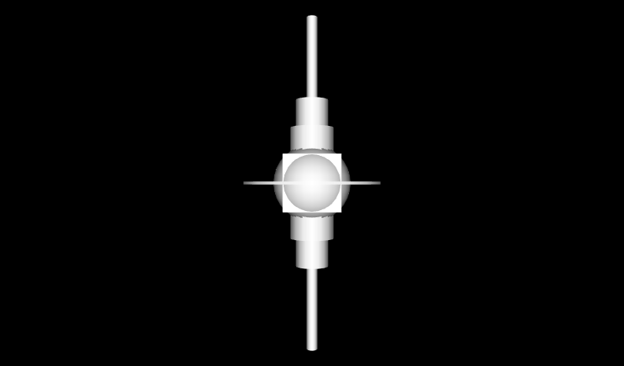

See: Description
| Class | Description |
|---|---|
| Figure03_01DefaultBox |
Default Box uses default values.
|
| Figure03_01DefaultBoxWithAxes |
Default Box uses default values, coordinate axes superimposed to show X3D/VRML directions.
|
| Figure03_02ResizedBox |
Resized Box with a small width, a medium height, and a large depth.
|
| Figure03_02ResizedBoxWithAxes |
Resized Box with a small width, a medium height, and a large depth.
|
| Figure03_03DefaultCone |
Default Cone.
|
| Figure03_03DefaultConeWithAxes |
Default Cone with coordinate axes superimposed to show X3D/VRML directions.
|
| Figure03_04FlattenedCone |
Flattened Cone: a cone with a large bottom radius and a short height.
|
| Figure03_04FlattenedConeWithAxes |
Flattened Cone: a cone with a large bottom radius and a short height, with coordinate axes superimposed to show X3D/VRML directions.
|
| Figure03_05DefaultCylinder |
Default Cylinder.
|
| Figure03_05DefaultCylinderWithAxes |
Default Cylinder, with coordinate axes superimposed to show X3D/VRML directions.
|
| Figure03_06ResizedCylinder |
Resized Cylinder: a cylinder with a large radius and a short height.
|
| Figure03_06ResizedCylinderWithAxes |
Resized Cylinder: a cylinder with a large radius and a short height, with coordinate axes superimposed to show X3D/VRML directions.
|
| Figure03_07ResizedCylinderHollow |
Resized Cylinder Hollow: a cylinder with a large radius, short height, no top and no bottom.
|
| Figure03_07ResizedCylinderHollowWithAxes |
Resized Cylinder Hollow: a cylinder with a large radius, short height, no top and no bottom, with coordinate axes superimposed to show X3D/VRML directions.
|
| Figure03_08DefaultSphere |
Default Sphere.
|
| Figure03_08DefaultSphereWithAxes |
Default Sphere, with coordinate axes superimposed to show X3D/VRML directions.
|
| Figure03_09_3dPlusSign |
3D Plus Sign is made out of three perpendicular Boxes - rotate and examine to see.
|
| Figure03_10SpaceStation |
Space Station, or spark plug?
|
This chapter describes how to build primitive geometric shapes.
|
The Shape node contains Appearance and geometry. Geometry primitive nodes of interest include Box, Cone, Cylinder, Sphere, Text and FontStyle. Multiple Shape nodes can be drawn together to make new objects of interest. These X3D scenes are adapted directly from the original VRML 2.0 Sourcebook chapter examples. Also available: Introduction to VRML97 SIGGRAPH98 course notes. |
 |
Copyright ©2005-2019 Web3D Consortium under an open-source license, free for any use. Feedback is welcome.